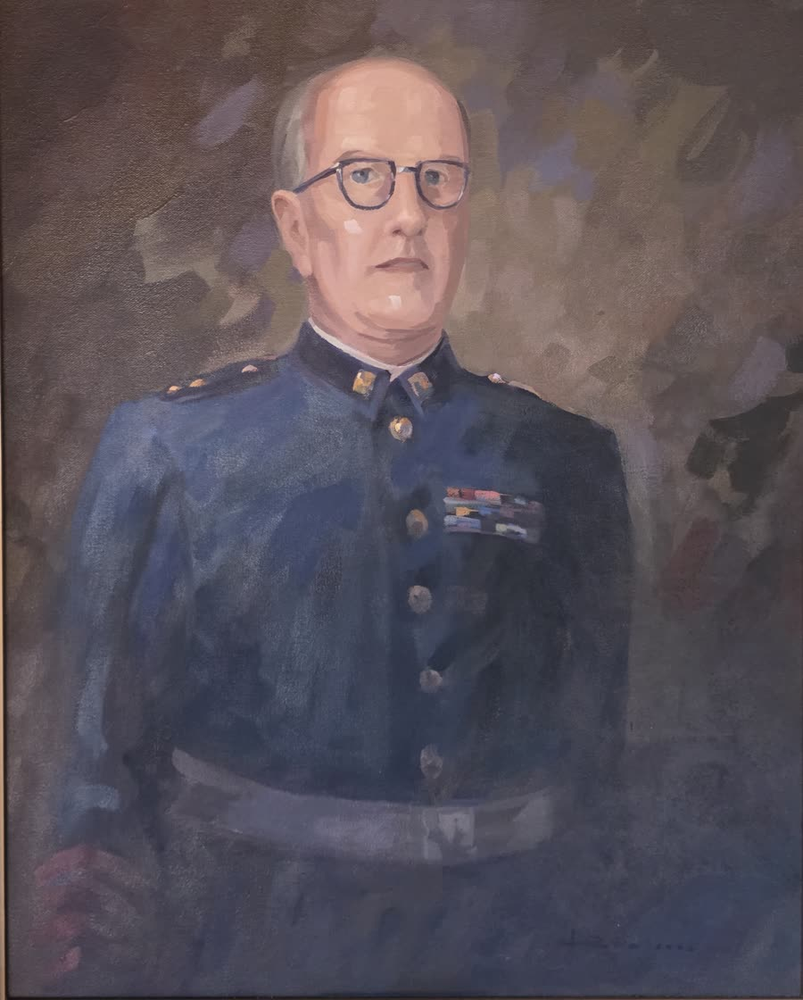
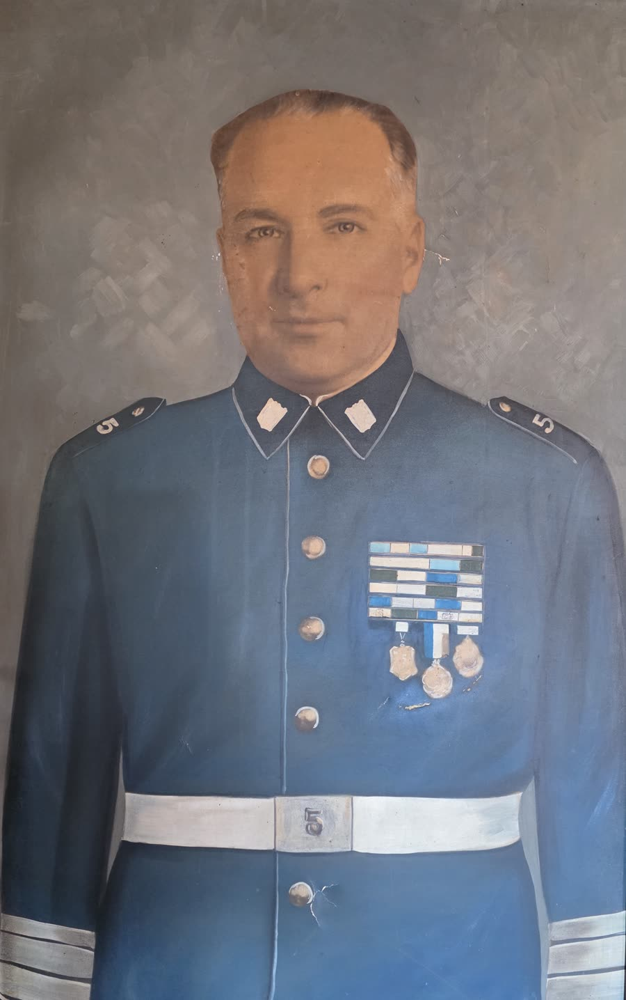
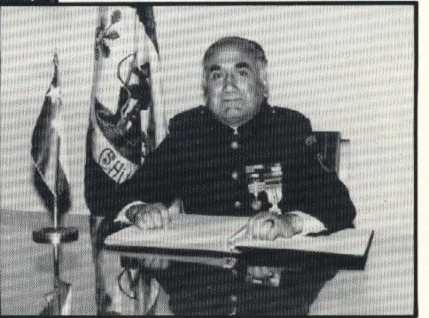
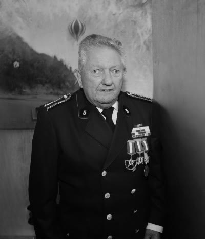
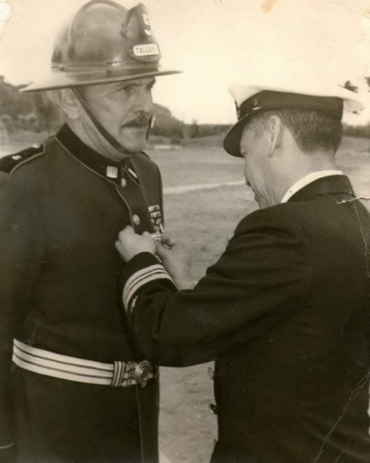

Quintinos que dejaron huella en la historia de la compañía.

Luis de la Cerda Schuyler
(1904–1983). Médico. Ingresó a la Quinta en 1928 y en 1932 fue elegido Director de la compañía. Superintendente del Cuerpo de Bomberos de Talcahuano, 1935–1979

Juan Guillermo Sosa Severino
(1900–1983). Ingresó a la Quinta el 31 de julio de 1919 y ocupó todos los cargos ejecutivos de la compañía. Comandante del Cuerpo de Bomberos de Talcahuano, 1937–1968, el período más largo en ese cargo. La Brigada Juvenil lleva su nombre

Fernando Etcheverry Urra
Superintendente del Cuerpo de Bomberos de Talcahuano y Director de la Junta Nacional de Bomberos

Ariel Duffau Gálvez
Director de la Quinta hasta 2003. Lideró la construcción del cuartel de Villa Independencia (2001)

Adonai Ayala Ayala
Voluntario insigne

Caupolicán Cisternas Lagos

Arman Eduardo Saldes Santuber
Voluntario insigne. Nació el 6 de julio de 1929 e ingresó a la Quinta el 2 de enero de 1947. Fue Teniente de la compañía y Ayudante General del Cuerpo de Bomberos de Talcahuano

Pedro Javier Etcheverry Schröer
Voluntario insigne. Nació el 15 de junio de 1956 e ingresó a la Quinta el 27 de noviembre de 1974. Fue Ayudante, Teniente y Capitán de la compañía, y Comandante del Cuerpo de Bomberos de Talcahuano durante 15 años

Juan Alberto Sosa González
Voluntario honorario. Nació el 3 de noviembre de 1965 e ingresó a la Quinta el 23 de septiembre de 1986. Fue Teniente y Capitán de la compañía durante 10 años, y recibió el premio por 35 años de servicio

Arnoldo Urquiza
Fotografías